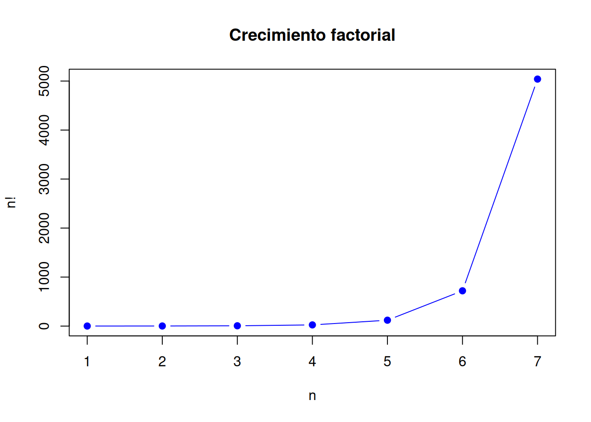

9 Técnicas de conteo
9.1 Concepto teórico
Las técnicas de conteo permiten determinar el número de resultados posibles de un experimento sin enumerarlos uno por uno. Son la base operativa del cálculo probabilístico en problemas finitos.
9.1.1 Principio multiplicativo
Si un proceso ocurre en varias etapas y cada etapa tiene un número de opciones, entonces el número total de resultados se obtiene multiplicando las opciones de cada etapa.
Si una primera etapa puede realizarse de \(n_1\) formas, una segunda de \(n_2\) formas y así sucesivamente, entonces:
\[ N = n_1 \cdot n_2 \cdot \dots \cdot n_k \]
9.2 Ejemplo aplicado
En un sistema fotovoltaico se desea seleccionar 2 paneles de un conjunto de 5 disponibles para pruebas de laboratorio.
## [1] "P1" "P2" "P3" "P4" "P5"Si importa el orden de instalación, se trabaja con permutaciones. Si solo interesa qué paneles se eligen, se trabaja con combinaciones.
9.4 Gráfica
Se compara el crecimiento de \(n!\) para distintos valores de \(n\).
n <- 1:7
fact <- factorial(n)
plot(n, fact, type = "b", pch = 19, col = "blue",
main = "Crecimiento factorial",
xlab = "n", ylab = "n!")
9.5 Simulación
Supóngase que en una línea industrial existen 4 operarios y se desea asignar 2 puestos específicos. Como el orden importa, el número de asignaciones posibles corresponde a una permutación.
## Puesto1 Puesto2
## 1 A A
## 2 B A
## 3 C A
## 4 D A
## 5 A B
## 6 B B
## 7 C B
## 8 D B
## 9 A C
## 10 B C
## 11 C C
## 12 D C
## 13 A D
## 14 B D
## 15 C D
## 16 D Dasig <- expand.grid(Puesto1 = operarios, Puesto2 = operarios)
asig <- asig[asig$Puesto1 != asig$Puesto2, ]
head(asig)## Puesto1 Puesto2
## 2 B A
## 3 C A
## 4 D A
## 5 A B
## 7 C B
## 8 D B## [1] 129.6 Ejercicios propuestos
- En un laboratorio eléctrico hay 6 equipos disponibles. ¿De cuántas maneras se pueden elegir 3 equipos para inspección?
- ¿De cuántas maneras se pueden asignar 3 tareas distintas a 5 estudiantes si el orden importa?
- Modele ambos casos en R.
- Construya un ejemplo propio de permutaciones en su área de ingeniería.
- Construya un ejemplo propio de combinaciones en su área de ingeniería.
9.7 Caso real (ingeniería)
En ingeniería industrial, las técnicas de conteo se usan para analizar asignación de tareas, secuencias de operación y combinaciones de recursos.
En ingeniería civil, permiten estudiar configuraciones de rutas, ordenamientos de actividades o selección de muestras.
En ingeniería eléctrica, se aplican en configuraciones de circuitos, selección de componentes y disposición de dispositivos.
En energías renovables, son útiles al estudiar combinaciones de paneles, arreglos de baterías y escenarios de diseño.